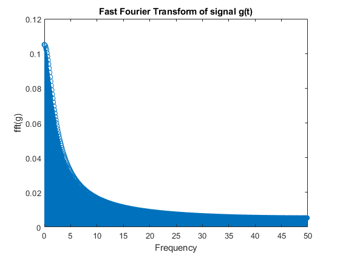
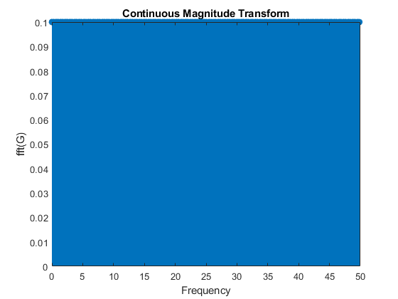
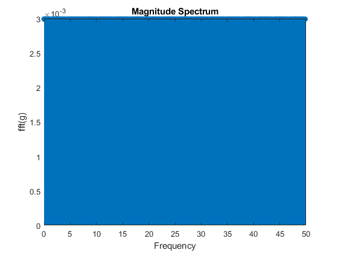

% Alberto Pizano % ECE448 % Lab2 Part 2 % 9/8/2019 clc clear all close all % Unit step function generation t = 0:0.01:1; sig = exp(-10.*t); % t = pulse width = 0.1ms trail = zeros(1,450); precede = zeros(1,450); g = [precede sig trail]; % Determine number of points in g(t) N = length(g); % length is 1000 % To determine the period of T T = N*0.01 % Fourier transform of g(t) z = fft(g)*0.01; figure(1) stem((0:(N/2-1))*(1/(N*0.01)),abs(z(1:N/2))); xlabel('Frequency'); ylabel('fft(g)'); title('Fast Fourier Transform of signal g(t)'); % Plot the continuous magnitude transform f = (0:N/2 -1)* (1/N*0.01); Gf = (1./(10+1i*2*pi*f)).*(1 - exp(-10 - 1i.*2.*pi.*f)); figure(2) stem((0:(N/2-1))*(1/(N*0.01)),abs(Gf)); xlabel('Frequency'); ylabel('fft(G)'); title('Continuous Magnitude Transform');
T = 10.0100 Warning: Integer operands are required for colon operator when used as index. 
Plot the magnitude spectrum sinc function
% Sinc function generation t2 = 0:0.01:1; sig = sin(pi.*t2)/(pi.*t2); trail = zeros(1,450); precede = zeros(1,450); g = [precede sig trail]; % Number of points in g(t) N = length(g); % Determine period of T T = N*0.01 % Fourier transform of g(t) z = fft(g)*0.01; figure(3) stem((0:N/2 - 1)*1/(N*0.01),abs(z(1:N/2))); xlabel('Frequency'); ylabel('fft(g)'); title('Magnitude Spectrum');
T =
9.0100
Warning: Integer operands are required for colon operator when used as index.
